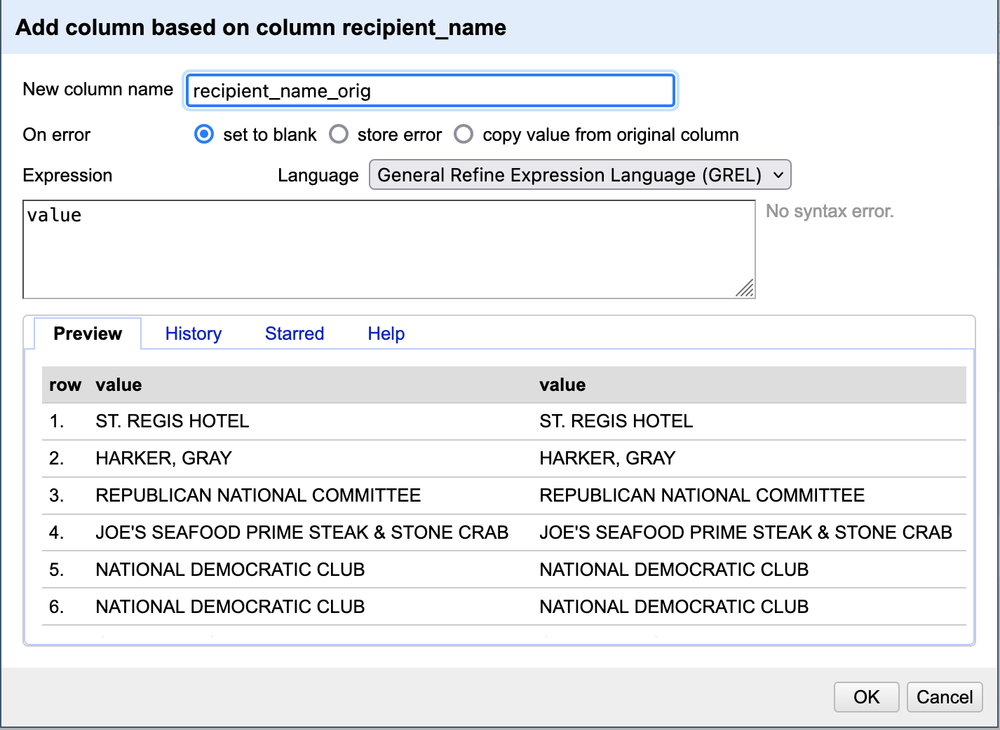
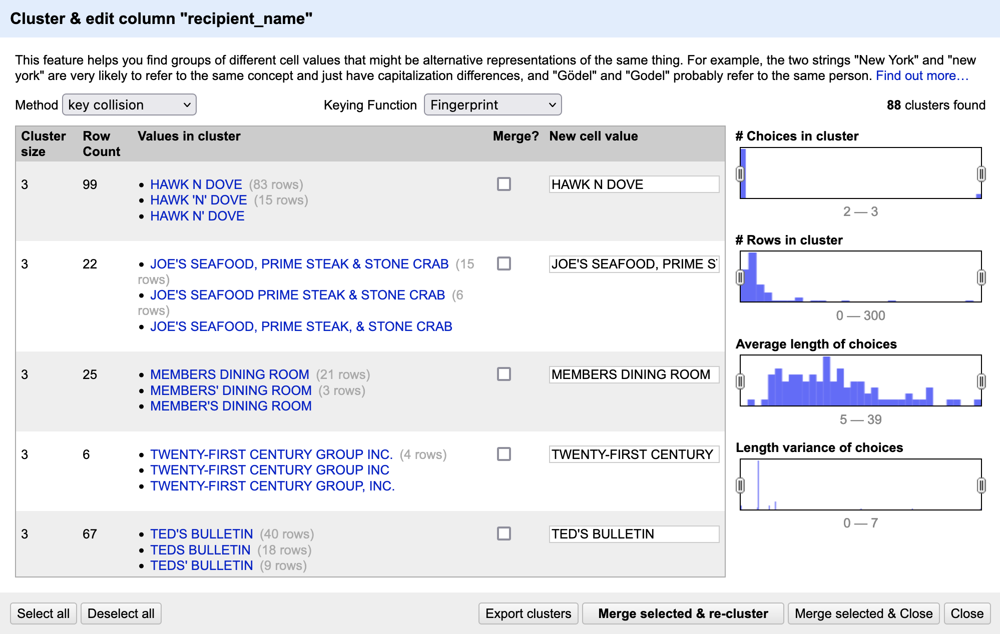
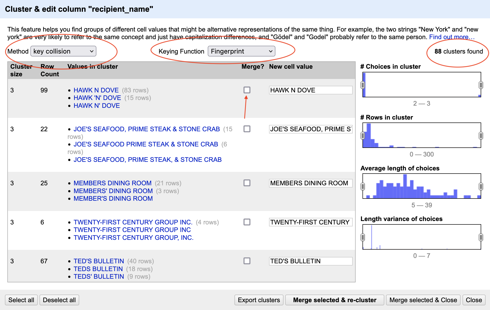

library(tidyverse)
library(refinr)
library(janitor)16 Data Cleaning Part III: Open Refine
Gather ’round kids and let me tell you a tale. Back in the previous century, Los Angeles Times journalists Sara Fritz and Dwight Morris wanted to answer this seemingly simple question: what do political campaigns spend their money on?
While campaigns are required to list a purpose of each expenditure, the problem is that they can choose what words to use. There’s no standard dictionary or drop-down menu to choose from. Want to call that donut purchase “Food”? Sure. What about “Supplies for volunteers”? Works for me. How about “Meals”? Mom might disagree, but the FEC won’t.
In order to answer their initial question, the reporters had to standardize their data. In other words, all food-related purchases had to be labeled “Food”. All travel expenses had to be “Travel”. It took them months - many months - to do this for every federal candidate.
I tell you this because if they had Open Refine, it would have taken them a week or two, not months.
I did data standardization before Open Refine, and every time I think about it, I get mad.
Fortunately (unfortunately?) several columns in the campaign finance data we’ll work with are flawed in the same way that the LA Times’ data was, so we can do this work in a better, faster way.
We’re going to explore two ways into Open Refine: Through R, and through Open Refine itself.
16.1 Refinr, Open Refine in R
What is Open Refine?
Open Refine is a software program that has tools – algorithms – that find small differences in text and helps you fix them quickly. How Open Refine finds those small differences is through something called clustering. The algorithms behind clustering are not exclusive to Open Refine, so they can be used elsewhere.
Enter refinr, a package that contains the same clustering algorithms as Open Refine but all within R. Go ahead and install it if you haven’t already by opening the console and running install.packages("refinr"). Then we can load libraries as we do.
Let’s load some campaign expenditure data focused on food-related expenses in Washington, D.C. Essentially, where campaigns spend their money on D.C. restaurants.
Now let’s try and group and count the number of expenditures by recipient. To make it a bit more manageable, let’s use another string function from stringr and filter for recipients that start with the uppercase “W” or lowercase “w” using the function str_detect() with a regular expression.
The filter function in the codeblock below says: look in the city column, and pluck out any value that starts with (the “^” symbol means “starts with”) a lowercase “w” OR (the vertical “|”, called a pipe, means OR) an uppercase “W”.
dc_food |>
group_by(recipient_name) |>
summarise(
count=n()
) |>
filter(str_detect(recipient_name, '^w|^W')) |>
arrange(recipient_name)# A tibble: 50 × 2
recipient_name count
<chr> <int>
1 W HOTELS 3
2 W. MILLAR & CO 1
3 W. MILLAR & CO. 5
4 WA METRO 1
5 WAGSHAL'S DELI 1
6 WALMART SUPERCENTER 13
7 WALTER'S SPORTS BAR 1
8 WALTERS 1
9 WALTERS SPORT 1
10 WALTERS SPORTS 1
# … with 40 more rowsThere are several problems in this data that will prevent proper grouping and summarizing. We’ve learned several functions to do this manually.
By using the Open Refine package for R, refinr, our hope is that it can identify and standardize the data with a little more ease.
The first merging technique that’s part of the refinr package we’ll try is the key_collision_merge.
The key collision merge function takes each string and extracts the key parts of it. It then puts every key in a bin based on the keys matching.
One rule you should follow when using this is: do not overwrite your original fields. Always work on a copy. If you overwrite your original field, how will you know if it did the right thing? How can you compare it to your original data? To follow this, I’m going to mutate a new field called clean_city and put the results of key collision merge there.
cleaned_dc_food <- dc_food |>
mutate(recipient_clean=key_collision_merge(recipient_name)) |>
select(recipient_name, recipient_clean, everything()) |>
arrange(recipient_clean)
cleaned_dc_food# A tibble: 13,108 × 50
recipient_n…¹ recip…² commi…³ commi…⁴ repor…⁵ repor…⁶ image…⁷ line_…⁸ trans…⁹
<chr> <chr> <chr> <chr> <dbl> <chr> <dbl> <chr> <chr>
1 &PIZZA &PIZZA C00003… REPUBL… 2022 M4 2.02e17 21B SB21B-…
2 1 WEST DUPONT 1 WEST… C00003… REPUBL… 2021 M3 2.02e17 21B SB21B-…
3 1 WEST DUPONT 1 WEST… C00003… REPUBL… 2021 M6 2.02e17 21B SB21B-…
4 1 WEST DUPONT 1 WEST… C00003… REPUBL… 2021 M12 2.02e17 21B SB21B-…
5 1 WEST DUPONT 1 WEST… C00003… REPUBL… 2022 M3 2.02e17 21B SB21B-…
6 1 WEST DUPONT 1 WEST… C00003… REPUBL… 2022 M3 2.02e17 21B SB21B-…
7 1 WEST DUPONT 1 WEST… C00003… REPUBL… 2021 M10 2.02e17 21B SB21B-…
8 1 WEST DUPONT 1 WEST… C00003… REPUBL… 2022 M4 2.02e17 21B SB21B-…
9 1 WEST DUPONT 1 WEST… C00003… REPUBL… 2022 M5 2.02e17 21B SB21B-…
10 1 WEST DUPONT 1 WEST… C00003… REPUBL… 2022 M5 2.02e17 21B SB21B-…
# … with 13,098 more rows, 41 more variables: file_number <dbl>,
# entity_type <chr>, entity_type_desc <chr>,
# unused_recipient_committee_id <chr>, recipient_committee_id <chr>,
# recipient_state <chr>, beneficiary_committee_name <chr>,
# national_committee_nonfederal_account <lgl>, disbursement_type <lgl>,
# disbursement_type_description <lgl>, disbursement_description <chr>,
# memo_code <chr>, memo_code_full <lgl>, disbursement_date <chr>, …To examine changes refinr made, let’s examine the changes it made to cities that start with the letter “W”.
cleaned_dc_food |>
group_by(recipient_name, recipient_clean) |>
summarise(
count=n()
) |>
filter(str_detect(recipient_clean, "^w|^W")) |>
arrange(recipient_clean)`summarise()` has grouped output by 'recipient_name'. You can override using
the `.groups` argument.# A tibble: 52 × 3
# Groups: recipient_name [52]
recipient_name recipient_clean count
<chr> <chr> <int>
1 W HOTELS W HOTELS 3
2 W. MILLAR & CO W. MILLAR & CO. 1
3 W. MILLAR & CO. W. MILLAR & CO. 5
4 WA METRO WA METRO 1
5 WAGSHAL'S DELI WAGSHAL'S DELI 1
6 WALMART SUPERCENTER WALMART SUPERCENTER 13
7 WALTERS WALTERS 1
8 WALTERS SPORT WALTERS SPORT 1
9 WALTERS SPORTS WALTERS SPORTS 1
10 WALTER'S SPORTS BAR WALTERS SPORTS BAR 1
# … with 42 more rowsYou can see several changes on the second page of results, including that refinr made “PIZZA, WE THE” into “WE THE PIZZA” which is pretty smart. Other potential changes, grouping together “WASHINGTON NATIONALS” and “WASHINGTON NATIONALS BASEBALL CLUB”, didn’t happen. Key collision will do well with different cases, but all of our records are upper case.
There’s another merging algorithim that’s part of refinr that works a bit differently, called n_gram_merge(). Let’s try applying that one.
cleaned_dc_food <- dc_food |>
mutate(recipient_clean=n_gram_merge(recipient_name)) |>
select(recipient_name, recipient_clean, everything())
cleaned_dc_food# A tibble: 13,108 × 50
recipient_n…¹ recip…² commi…³ commi…⁴ repor…⁵ repor…⁶ image…⁷ line_…⁸ trans…⁹
<chr> <chr> <chr> <chr> <dbl> <chr> <dbl> <chr> <chr>
1 ST. REGIS HO… ST. RE… C00658… MARK G… 2021 YE 2.02e17 17 SB17.I…
2 HARKER, GRAY HARKER… C00536… JOBS, … 2021 YE 2.02e17 21B SB21B.…
3 REPUBLICAN N… REPUBL… C00055… NY REP… 2021 M2 2.02e17 21B B35A42…
4 JOE'S SEAFOO… JOE'S … C00551… OORAH!… 2021 M4 2.02e17 21B SB21B.…
5 NATIONAL DEM… NATION… C00391… JIM CO… 2021 Q1 2.02e17 17 BA7DD5…
6 NATIONAL DEM… NATION… C00454… MARCIA… 2021 Q1 2.02e17 17 SB17.2…
7 CAFE MILANO CAFE M… C00391… JIM CO… 2021 Q1 2.02e17 17 B68639…
8 CAPITOL HILL… CAPITO… C00383… CONAWA… 2021 Q1 2.02e17 17 BA078C…
9 CAPITOL HILL… CAPITO… C00725… CLIFF … 2021 Q1 2.02e17 17 17883
10 CAPITOL HILL… CAPITO… C00383… CONAWA… 2021 Q1 2.02e17 17 B51CE8…
# … with 13,098 more rows, 41 more variables: file_number <dbl>,
# entity_type <chr>, entity_type_desc <chr>,
# unused_recipient_committee_id <chr>, recipient_committee_id <chr>,
# recipient_state <chr>, beneficiary_committee_name <chr>,
# national_committee_nonfederal_account <lgl>, disbursement_type <lgl>,
# disbursement_type_description <lgl>, disbursement_description <chr>,
# memo_code <chr>, memo_code_full <lgl>, disbursement_date <chr>, …To examine changes refinr made with this algorithm, let’s again look at recipients starting with W. We see there wasn’t a substantial change from the previous method.
cleaned_dc_food |>
group_by(recipient_name, recipient_clean) |>
summarise(
count=n()
) |>
filter(str_detect(recipient_clean, "^w|^W")) |>
arrange(recipient_clean)`summarise()` has grouped output by 'recipient_name'. You can override using
the `.groups` argument.# A tibble: 51 × 3
# Groups: recipient_name [51]
recipient_name recipient_clean count
<chr> <chr> <int>
1 W HOTELS W HOTELS 3
2 W. MILLAR & CO W. MILLAR & CO. 1
3 W. MILLAR & CO. W. MILLAR & CO. 5
4 WA METRO WA METRO 1
5 WAGSHAL'S DELI WAGSHAL'S DELI 1
6 WALMART SUPERCENTER WALMART SUPERCENTER 13
7 WALTERS WALTERS 1
8 WALTERS SPORT WALTERS SPORT 1
9 WALTERS SPORTS WALTERS SPORT 1
10 WALTER'S SPORTS BAR WALTERS SPORTS BAR 1
# … with 41 more rowsThis method also made some good changes, but not in every case. No single method will be perfect and often a combination is necessary.
That’s how you use the Open Refine r package, refinr.
Now let’s upload the data to the interactive version of OpenRefine, which really shines at this task.
16.2 Manually cleaning data with Open Refine
Open Refine is free software. You should download and install it; the most recent version is 3.6.0. Refinr is great for quick things on smaller datasets that you can check to make sure it’s not up to any mischief.
For bigger datasets, Open Refine is the way to go. And it has a lot more tools than refinr does (by design).
After you install it, run it. (If you are on a Mac it might tell you that it can’t run the program. Go to System Preferences -> Security & Privacy -> General and click “Open Anyway”.) Open Refine works in the browser, and the app spins up a small web server visible only on your computer to interact with it. A browser will pop up automatically.
You first have to import your data into a project. Click the choose files button and upload a csv of the DC food-related expenditures.

After your data is loaded into the app, you’ll get a screen to look over what the data looks like. On the top right corner, you’ll see a button to create the project. Click that.

Open Refine has many, many tools. We’re going to use one piece of it, as a tool for data cleaning. To learn how to use it, we’re going to clean the “recipient_name” field.
First, let’s make a copy of the original recipient_name column so that we can preserve the original data while cleaning the new one.
Click the dropdown arrow next to the recipient_name column, choose “edit column” > “Add column based on this column”:

On the window that pops up, type “recipient_name_orig” in the “new column name” field. Then hit the OK button.

Now, let’s get to work cleaning the recipient_name column.
Next to the recipient_name field name, click the down arrow, then facet, then text facet.

After that, a new box will appear on the left. It tells us how many unique recipient_names there are: 1,655. And, there’s a button on the right of the box that says Cluster.

Click the cluster button. A new window will pop up, a tool to help us identify things that need to be cleaned, and quickly clean them.

The default “method” used is a clustering algorithim called “key collision”, using the fingerprint function. This is the same method we used with the refinr package above.
At the top, you’ll see which method was used, and how many clusters that algorithm identified. There are several different methods, each of which work slightly differently and produce different results.

Then, below that, you can see what those clusters are. Right away, we can see how useful this program is. It identified 99 rows that have some variation on “Hawk N Dove” in the recipient_name field. It proposed changing them all to “HAWK N DOVE”.
Using human judgment, you can say if you agree with the cluster. If you do, click the “merge” checkbox. When it merges, the new result will be what it says in New Cell Value. Most often, that’s the row with the most common result. You also can manually edit the “New Cell Value” if you want it to be something else:
Now begins the fun part: You have to look at all 88 clusters found and decide if they are indeed valid. The key collision method is very good, and very conservative. You’ll find that most of them are usually valid.
Be careful! If you merge two things that aren’t supposed to be together, it will change your data in a way that could lead to inaccurate results.
When you’re done, click Merge Selected and Re-Cluster.
If any new clusters come up, evaluate them. Repeat until either no clusters come up or the clusters that do come up are ones you reject.
Now. Try a new method, maybe the “nearest neighbor levenshtein” method. Notice that it finds even more clusters - 167 - using a slightly different approach.
Rinse and repeat.
You’ll keep doing this, and if the dataset is reasonably clean, you’ll find the end.
When you’re finished cleaning, click “Merge Selected & Close”.
Then, export the data as a csv so you can load it back into R.

A question for all data analysts – if the dataset is bad enough, can it ever be cleaned?
There’s no single definitive answer. You have to find it yourself.